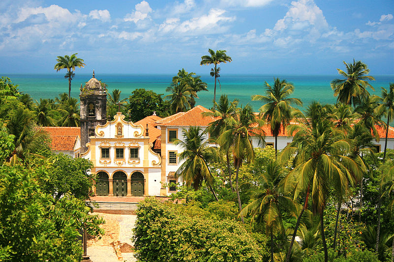
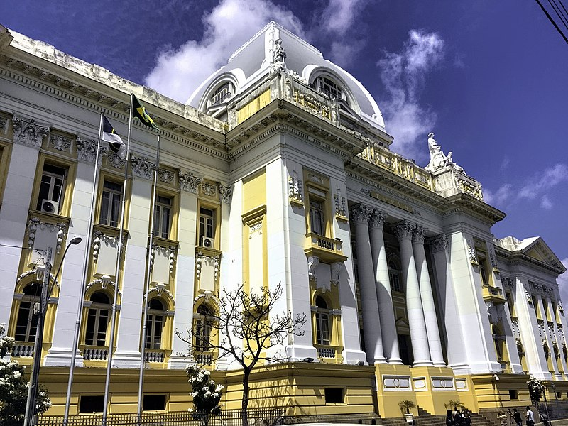
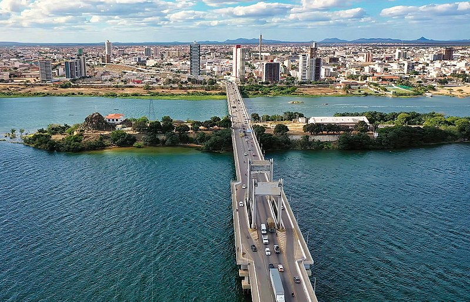

by Ángel Gómez Prol
13/10/2022
San Francisco Convent lies along the sandy coastline of northeastern Brazil in the historic town of Olinda, which was founded in 1535. Its economy was fueled by the sugar trade. The San Francisco convent was originally established in 1585 but was destroyed by a Dutch invasion and rebuilt in 1631. The resurrected convent was designed in the Portugese baroque style and was adorned with elaborate painted decorations. In addition to the expansive polychrome murals, the tile work and seventeenth-century fountain are noteworthy features. The San Francisco Convent also boasts an ample rare book collection. One of the most significant areas within the complex is the Chapel of São Roque, which connects to the church’s main nave through a monumental archway and contains sculptures from the late seventeenth and early eighteenth centuries.
Tribunals are specialist judicial bodies which decide disputes in a particular area of law. Most tribunal jurisdictions are part of a structure created by the Courts and Enforcement Act 2007. Tribunals decide a wide range of cases ranging from workplace disputes between employers and employees, appeals against decisions of Government departments (including social security benefits; immigration and asylum; and tax credits). They hear about a million cases each year, more than any other part of the justice system. The geographical jurisdiction of tribunals varies – some extend to Scotland and/or Northern Ireland, as well as England and Wales. Tribunal hearings take place in a variety of settings including specific tribunal hearing rooms or informal court rooms.
The São Francisco River is a large river in Brazil. With a length of 2,914 kilometres (1,811 mi), it is the longest river that runs entirely in Brazilian territory, and the fourth longest in South America and overall in Brazil (after the Amazon, the Paraná and the Madeira). It used to be known as the Opara by the indigenous people before colonisation, and is today also known as "Velho Chico". The São Francisco originates in the Canastra mountain range in the central-western part of the state of Minas Gerais. It runs generally north in the states of Minas Gerais and Bahia, behind the coastal range, draining an area of over 630,000 square kilometres (240,000 sq mi), before turning east to form the border between Bahia on the right bank and the states of Pernambuco and Alagoas on the left one. After that, it forms the boundary between the states of Alagoas and Sergipe and washes into the Atlantic Ocean. In addition to the five states which the São Francisco directly traverses or borders, its drainage basin also includes tributaries from the state of Goiás and the Federal District.
Images copyright from here
Come back to the main page